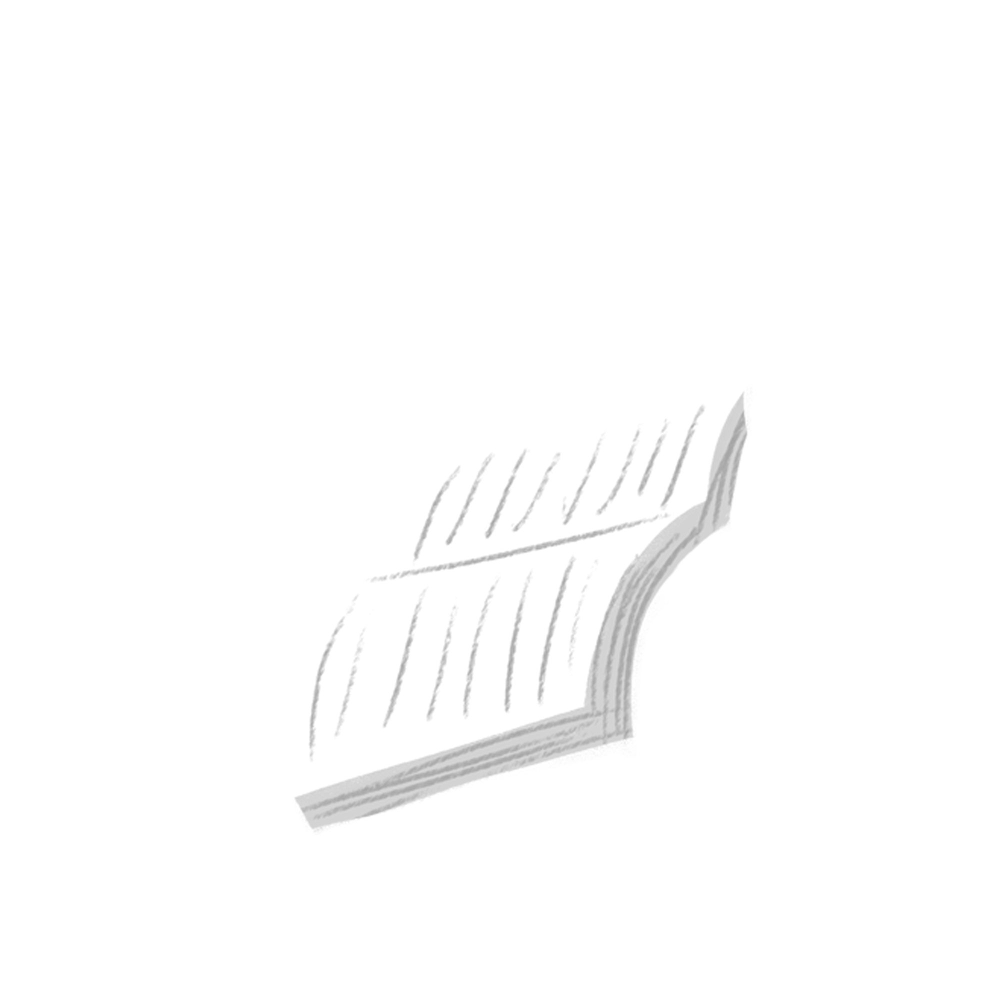

<mat-toolbar color="primary" class="desktop">
<div class="navigation">
  <div class="logo">
    
  </div>
  <mat-toolbar-row>
    <span class="fill-remaining-space">Book Management</span>
    <span class="menu-spacer"></span>
    <div>
      <a mat-button [routerLink]="'/books'"> Books </a>
      <a mat-button [routerLink]="'/history'"> History </a>
    </div>
  </mat-toolbar-row>
</div>
</mat-toolbar>


<mat-toolbar color="primary" class="mobile">
   <div class="logo">
    
  </div>
  <span class="fill-remaining-space">
    <button mat-icon-button [matMenuTriggerFor]="menu">
      <mat-icon>menu</mat-icon>
    </button>
    <mat-menu #menu="matMenu" [overlapTrigger]="false" class="mobileMenu">
      <button mat-menu-item>
        <a mat-button [routerLink]="'/books'">
          <mat-icon>home</mat-icon>
          <span> Books</span> 
        </a>
      </button>
      <button mat-menu-item>

      <a mat-button [routerLink]="'/history'"> 
        <mat-icon>people_outline</mat-icon>
        <span>History</span>
      </a>
    </button>
    </mat-menu>
  </span>

  <span class="fill-remaining-space">Book Management</span>
</mat-toolbar>